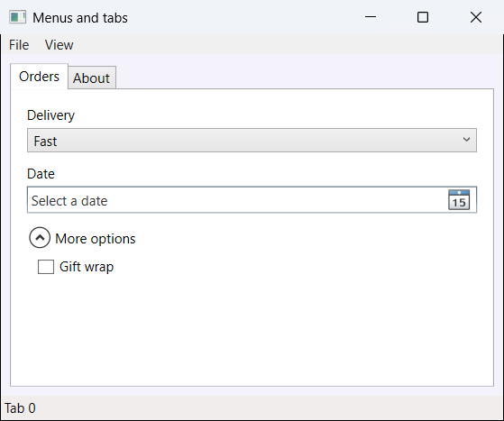

WPF menus and tabs
Menus, tabs, a status bar, combo boxes, date pickers and expanders are the parts of most WPF windows. This lesson writes them in XAML, connects menu items to Ring code, shows and hides the status bar with a checkable item, and tests every part.
What you will learn#
- a
DockPanelwith aMenuat the top and aStatusBarat the bottom, MenuItem:Header(with_for the key), separators andInputGestureText,- a checkable menu item and its
CheckedandUncheckedevents, TabControl,TabItemand theSelectionChangedevent,ComboBox,DatePickerandExpander,Visibility:VisibleandCollapsed,- clicking a menu item in a test by raising its
Clickevent.
The tutorial WPF layout and styles used a Grid; this lesson uses the controls of a normal application window.
The program#
# WPF menus and tabs - Menu and MenuItem, a checkable item, a TabControl, an Expander, a ComboBox and a DatePicker in XAML
load "dotnet.ring"
using {
"System.Windows"
"System.Windows.Controls"
"System"
}
oWindow = ""
nNew = 0
func main
# XAML describes the window as a tree: a DockPanel puts the menu at the top, a StatusBar at the bottom and the rest in the middle.
# Every element that the program uses has an x:Name, and wpfFind(oWindow,"name") finds it.
cXaml = '<Window xmlns="http://schemas.microsoft.com/winfx/2006/xaml/presentation" xmlns:x="http://schemas.microsoft.com/winfx/2006/xaml" Title="Menus and tabs" Width="460" Height="380" Background="#F4F2FB">'
cXaml += '<DockPanel>'
cXaml += '<Menu DockPanel.Dock="Top">'
cXaml += '<MenuItem Header="_File"><MenuItem x:Name="newItem" Header="_New" InputGestureText="Ctrl+N"/><Separator/><MenuItem x:Name="exitItem" Header="E_xit"/></MenuItem>'
cXaml += '<MenuItem Header="_View"><MenuItem x:Name="statusItem" Header="_Status bar" IsCheckable="True" IsChecked="True"/></MenuItem>'
cXaml += '</Menu>'
cXaml += '<StatusBar x:Name="status" DockPanel.Dock="Bottom"><TextBlock x:Name="message" Text="Ready"/></StatusBar>'
cXaml += '<TabControl x:Name="tabs" Margin="8">'
cXaml += '<TabItem Header="Orders"><StackPanel Margin="12">'
cXaml += '<TextBlock Text="Delivery"/>'
cXaml += '<ComboBox x:Name="speed" Margin="0,4,0,10"><ComboBoxItem Content="Normal" IsSelected="True"/><ComboBoxItem Content="Fast"/><ComboBoxItem Content="Overnight"/></ComboBox>'
cXaml += '<TextBlock Text="Date"/>'
cXaml += '<DatePicker x:Name="day" Margin="0,4,0,10"/>'
cXaml += '<Expander x:Name="more" Header="More options"><CheckBox x:Name="gift" Content="Gift wrap" Margin="8"/></Expander>'
cXaml += '</StackPanel></TabItem>'
cXaml += '<TabItem Header="About"><TextBlock Margin="12" Text="A window made of a menu, tabs and a status bar."/></TabItem>'
cXaml += '</TabControl>'
cXaml += '</DockPanel></Window>'
oWindow = wpfXaml(cXaml)
# a menu item has a Click event, like a button
wpfFind(oWindow,"newItem").setClickEvent("newOrder()")
wpfFind(oWindow,"exitItem").setClickEvent("say('Exit was chosen')")
# a checkable item has IsChecked; its Checked and Unchecked events tell when the user changes it
wpfFind(oWindow,"statusItem").setCheckedEvent("showStatusBar(True)")
wpfFind(oWindow,"statusItem").setUncheckedEvent("showStatusBar(False)")
# a tab control raises SelectionChanged when the user chooses another tab
wpfFind(oWindow,"tabs").setSelectionChangedEvent("say('Tab ' + wpfFind(oWindow,'tabs').SelectedIndex)")
wpfRun(oWindow)
func say cText
wpfFind(oWindow,"message").Text = cText
func newOrder
nNew++
say("New order " + nNew)
wpfFind(oWindow,"gift").IsChecked = False
wpfFind(oWindow,"speed").SelectedIndex = 0
# Visibility is Visible or Collapsed (the space of a collapsed element is not kept)
func showStatusBar lVisible
if lVisible
wpfFind(oWindow,"status").Visibility = "Visible"
else
wpfFind(oWindow,"status").Visibility = "Collapsed"
ok
How it works#
The layout#
A DockPanel places each child on a side of the window: the menu goes to the Top and the status bar to the Bottom (DockPanel.Dock), and the last child (the tab control) fills what is left. Everything that the program uses has an x:Name, so wpfFind(oWindow, "name") finds it.
Menus#
In Header="_File" the underscore marks the access key: the user presses Alt+F. A MenuItem inside another is a submenu entry; <Separator/> draws a line; InputGestureText="Ctrl+N" shows the shortcut text (a shortcut itself needs a command, which is written with an InputBindings element in XAML or a KeyDown handler). setClickEvent("newOrder()") runs Ring code when the item is chosen, as for a button.
A checkable item#
IsCheckable="True" gives the item a check mark, and IsChecked is its state. The events Checked and Unchecked run when the user (or the program) changes it. Here the item Status bar shows or hides the status bar by setting Visibility to "Visible" or "Collapsed". Collapsed takes no space; Hidden (the other value) keeps the empty space.
Tabs#
A TabControl has TabItem children. Each one has a Header (the title of the tab) and a content: here a StackPanel with controls and a TextBlock. SelectedIndex says which tab is shown and can be set from the program; SelectionChanged runs when it changes. The event handler of a tab control also runs for the list controls inside it (a combo box raises its own SelectionChanged, and the event travels up), so a handler that shows the tab should check that the tab control raised it when the tabs hold lists.
Combo box, date picker, expander#
A ComboBox has items (ComboBoxItem); IsSelected="True" chooses one at the start, SelectedIndex chooses by number and Text reads the chosen text. A DatePicker has SelectedDate (a DateTime, empty until the user chooses) and a calendar drop-down. An Expander shows its content when IsExpanded is true: it keeps rarely used options out of the way.
Testing#
The test cannot click a menu with a mouse, so it raises the Click event of the item itself: RaiseEvent(new RoutedEventArgs().@New([ :routedEvent = new MenuItem().ClickEvent ])). After each action it reads the property that should have changed: the status text, the Visibility of the status bar, the selected tab, the chosen speed. The menu item New resets the combo box and the check box, and the test checks that too.
The checks of this program are in a separate file, selftest/ch11_wpf_menu.ring:
# the checks of ch11_wpf_menu.ring: run with ring ch11_wpf_menu.ring --selftest (the program loads this file and runs selfTest() once its window is shown)
# a menu item is clicked by raising its Click event, as a user would
func clickItem cName
wpfFind(oWindow,cName).RaiseEvent(new RoutedEventArgs().@New([ :routedEvent = new MenuItem().ClickEvent ]))
func selfTest
# a menu item runs its code
clickItem("newItem")
dnAssert("new order",wpfFind(oWindow,"message").Text,"New order 1")
clickItem("exitItem")
dnAssert("exit",wpfFind(oWindow,"message").Text,"Exit was chosen")
# a checkable item: unchecking hides the status bar, checking shows it
dnAssert("the status bar is visible",wpfFind(oWindow,"status").Visibility,"Visible")
wpfFind(oWindow,"statusItem").IsChecked = False
dnAssert("the status bar is hidden",wpfFind(oWindow,"status").Visibility,"Collapsed")
wpfFind(oWindow,"statusItem").IsChecked = True
dnAssert("the status bar is back",wpfFind(oWindow,"status").Visibility,"Visible")
# the tabs
dnAssert("the first tab",wpfFind(oWindow,"tabs").SelectedIndex,0)
wpfFind(oWindow,"tabs").SelectedIndex = 1
dnAssert("the tab changed",wpfFind(oWindow,"message").Text,"Tab 1")
wpfFind(oWindow,"tabs").SelectedIndex = 0
# a combo box, an expander and a check box inside it
wpfFind(oWindow,"speed").SelectedIndex = 2
dnAssert("the chosen speed",wpfFind(oWindow,"speed").Text,"Overnight")
dnAssert("the expander is closed",wpfFind(oWindow,"more").IsExpanded,False)
wpfFind(oWindow,"more").IsExpanded = True
wpfFind(oWindow,"gift").IsChecked = True
dnAssert("gift wrap",wpfFind(oWindow,"gift").IsChecked,True)
# a date picker: SelectedDate is a DateTime (empty until a date is chosen)
wpfFind(oWindow,"day").SelectedDate = new DateTime(2030,5,10)
dnAssert("the chosen date",wpfFind(oWindow,"day").SelectedDate.Format("yyyy-MM-dd"),"2030-05-10")
# the menu item New puts everything back
clickItem("newItem")
dnAssert("the speed is reset",wpfFind(oWindow,"speed").SelectedIndex,0)
dnAssert("the gift is reset",wpfFind(oWindow,"gift").IsChecked,False)What you learned#
- a window with a menu, tabs and a status bar in XAML,
- menu items, separators and a checkable item,
- tabs, combo boxes, date pickers and expanders,
Visibility,- testing menu items by raising
Click.
Exercises#
- Add a menu Edit with Copy and Paste that use the text of a
TextBox. - Add a context menu to the text block of the About tab (
ContextMenuinside the element). - Add a third tab with a
ListBoxand show the number of items in the status bar. - Make Exit close the window (
oWindow.Close()).